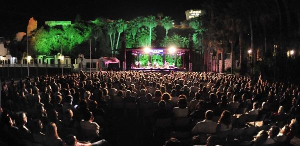

Save The Plants

Festivities and Culture on the coast of Granada
The festivities that take place in the Granada region of the Costa Tropical are deeply rooted in the traditions and customs of the area, as well as the personality of its inhabitants. The towns of the coast celebrate every year the Bonfires of San Juan, the Cruces de Mayo and the picturesque procession of the Virgen del Carmen, in July, patron saint of the sailors.
Popular music plays a fundamental role too. Proof of this is the Trovo, popular song of Andalusian Arabic origin, typical of localities in this area such as Albuñol. With him the people express feelings, complaints, denunciations and stories singing improvised stanzas of five verses.
Of great renown is the International Concert of Classical Guitar and Composition Competition 'Andrés Segovia', which bears the name of the illustrious adopted son of Almuñécar and La Herradura. A delight for music lovers that is celebrated in the town of Almuñécar during the first week of the year. Also in what was Sexi Romana the Jazz Festival takes place on the Coast, which in its fifteen years of activity has managed to bring together the best blues, jazz and bossa stars, or the José Martín Recuerda Theater Competition, in tribute to the playwright Granadian.
